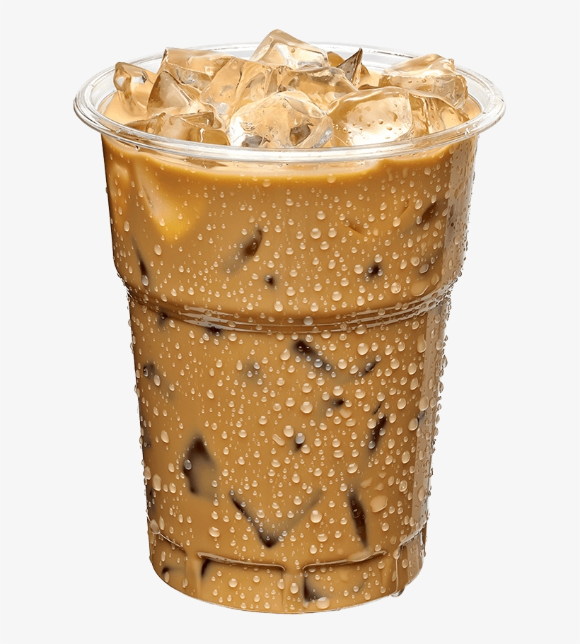

Welcome to Coffee Site!
Hola! Welcome to my first webpage development project. I decided to pick coffee because I just can't get enough of coffee and this hopefully will serve as motivation to make a fun website. Would love to hear from you if you have feedback or anything you want to share!
